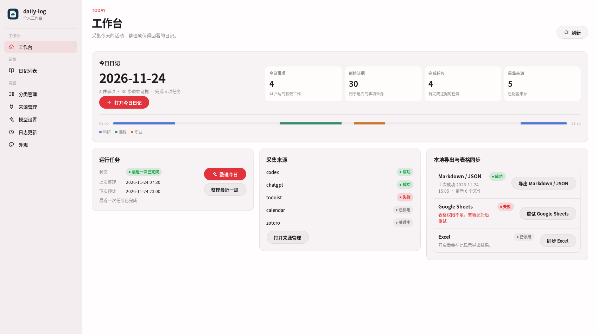
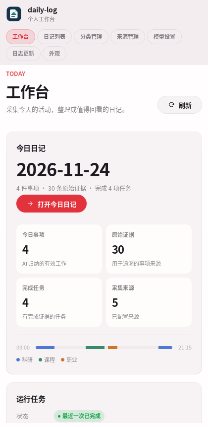
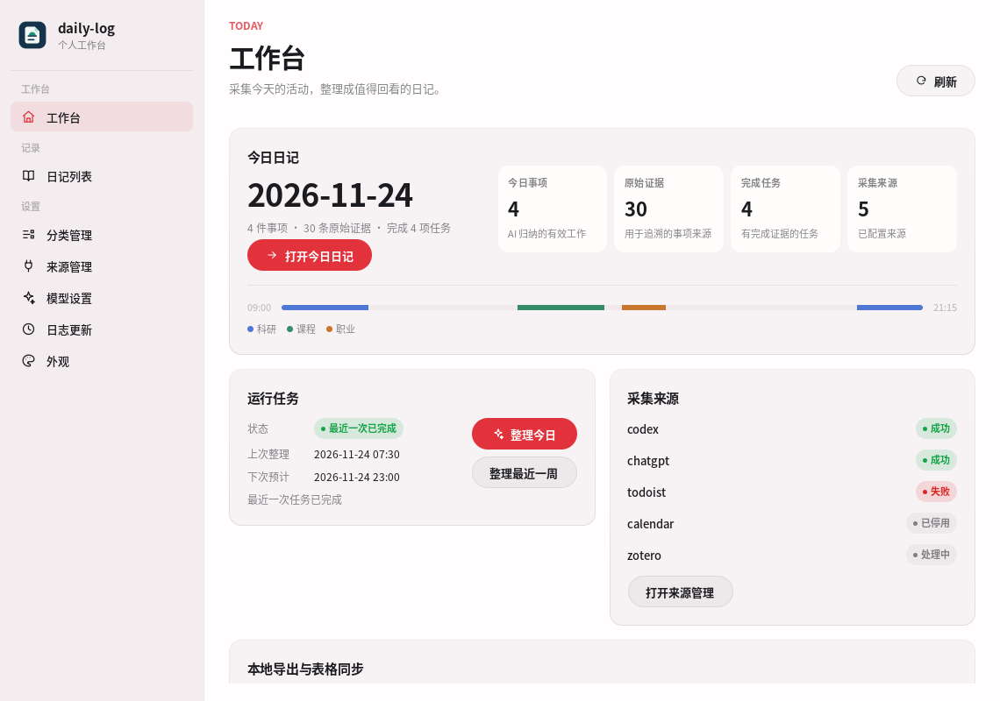
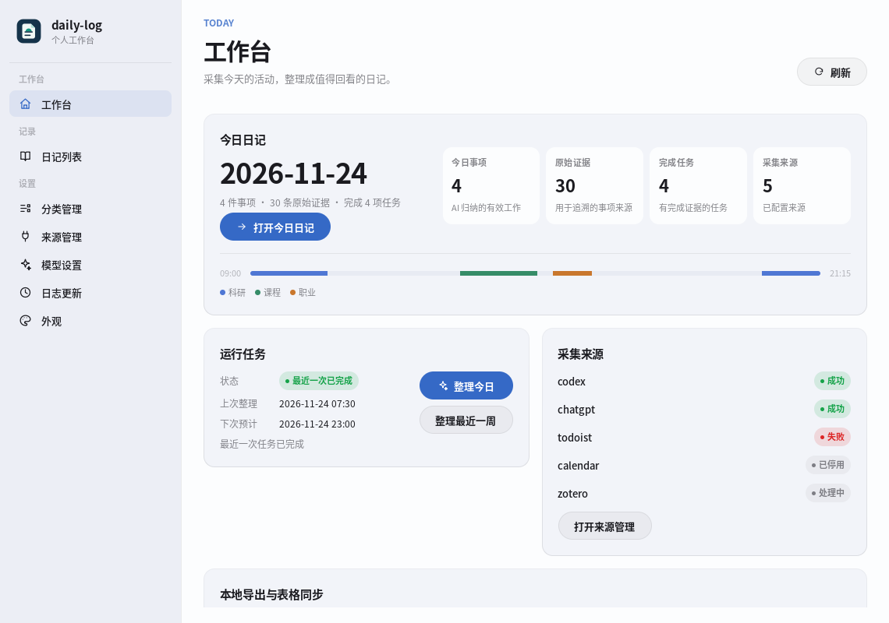

把散落一天的真实证据，
整理成值得回看的日记。
daily-log 自动采集 Zotero 阅读标注、Todoist 完成记录、Codex 编码讨论、代码仓库提交与本地笔记活动，由 AI 合并提炼为上午、下午、晚上三个时段的高价值事项。每条事项都锚定原始证据，缺少可靠起止记录时保持用时未知，绝不凭空臆造。
输入：多来源脱敏证据批次（SQLite events）
输出：AI 归纳高价值事项（≤28 字标题 + 可核验摘要）
定下反例与数据来源的对应关系，改写两段核心推导，并留下一条待实验验证的边界假设。
11 / 28 字
基于 MyGo 的跨平台原生工作台
无需臃肿的 Electron 运行时。桌面端使用纯 Go 编写的 MyGo 原生 UI，在 Linux 与 Windows 上提供毫秒级响应；右上角切换浅色／深色外观可实时同步下方全部真实界面快照。

克制而严密的数据流转纪律
个人日志系统的核心难点不在于调用一次大模型，而在于长期运行中的幂等去重、断电补采、凭证隔离与人工修改保护。
水位窗口采集
按各来源最后成功时间减 3 天重叠回查，转换原始事件时间戳至北京时间，生成稳定事件 ID 增量写入本地 SQLite。
脱敏与阅读会话推断
过滤常见 API 密钥、私钥块与无关系统提示；将同日相近 Zotero 文献标注聚合为可解释的论文阅读会话，保留历史修订快照。
受约束 AI 事项提炼
将跨来源多轮记录归并为 ≤28 字短标题与进展说明；若输出残留对话角色标签、粘贴原文或超长，程序自动要求模型重写校验。
核验式多目标输出
导出本地 Markdown / JSON，并以写前复读 + 写后核验策略增量更新 Google Sheets 与本地 Excel，严守人工内容与已有公式。
人工编辑与表格公式零覆盖
手动编辑保存的日记永不被后续自动整理覆盖。Google Sheets 与 Excel 同步按实际表头和唯一键定位，遇到人工修改、公式或未知非空行自动转入建议队列。
关机欠账自动按水位自愈
无需常驻守护进程，也不要求电脑彻夜开机。通过持久化 systemd 定时器或 Windows 登录恢复任务，开机后自动按各来源水位补齐跨天记录。
本地隔离与全链路凭证遮盖
密钥仅保存在被 Git 排除的 .env 或 0600 权限的 *.settings.json。表格同步自动脱敏已知凭证，行主键疑似含密钥时直接跳过写入。
围绕科研、编码与日常构建的连接生态
所有外部连接默认关闭，均采用各服务官方公开文档定义的只读 API、本机回环服务或本地文件夹扫描，不破解私有数据库、不注入轮询脚本。
Zotero
本机只读 API通过 localhost:23119/api 读取论文高亮标注、笔记与 CSL 元数据，无需云端密钥，支持按时间间隔推断阅读会话。
Todoist
官方 REST API采集本人完成的任务事件并补充描述快照，支持重复任务多次完成独立计数，自动检测免费版历史保留期缺口。
Google Calendar
OAuth / 服务账号只读已授权日历，自动展开周期日程实例、处理跨午夜边界，并在源端取消日程时同步更新本地状态。
Codex 会话
只读 app-server读取本机及 SSH 远程主机的完整对话轮次，过滤内部思考与工具输出，仅提取有原文证据支撑的实质技术讨论。
GitHub
来源目录读取认证用户的提交推送、Pull Request、Issue 与代码评审动态，用户名留空时通过令牌自动识别验证。
GitLab
来源目录兼容官方 gitlab.com 与自建 GitLab 实例，采集项目推送、Merge Request 与议题协作记录。
WakaTime
来源目录拉取每日编码时长汇总，按项目聚合为具备实测分钟数证据的研发活动记录，自动忽略不足 1 分钟的碎片。
ActivityWatch
来源目录连接本机 127.0.0.1:5600 服务读取窗口与浏览器活跃存储桶，自动剔除 AFK 挂机桶与瞬时切换。
Obsidian
来源目录按文件修改时间扫描本地 Vault 中的 Markdown 笔记编辑，内置输出路径排除守卫，绝不将导出的日记误读为新笔记。
Logseq
来源目录扫描本地知识图谱目录中的 .md 与 .org 页面变更，生成带本地文件直达引用的编辑事件。
Markdown / JSON
默认启用零外部依赖导出结构化 JSON 与人类可读的三时段 Markdown 文件，天然适配 Git 归档或二次检索工具。
Google Sheets
原生同步同步「每日活动、活动流水、论文阅读、统计看板」四张工作表，支持自动换行、分类配色与 12 格活动占比条。
本地 Excel (.xlsx)
原生同步基于纯 Go Excelize 读写，无需安装 Office；检测 ~$ 占用锁，保留最近 5 份自动备份并原子替换。
桌面采集，手机随时查阅与批注
无需将个人活动数据库上传第三方云端。daily-log 将同一套 MyGo 界面编译为 WebAssembly，使 Android 手机可在局域网通过受信任 HTTPS 直连 Linux 或 Windows 采集主机。
默认仅监听 127.0.0.1；开启移动访问必须显式提供 TLS 证书。配对码 10 分钟有效，换取 12 小时加密会话，桌面端可随时吊销或重置。
针对移动网络波动与中文软键盘长文输入专项调优；网络闪断或会话过期时未保存正文不丢失，新标签页重配对后即可返回原页提交。
基于修订号（Revision）校验保存请求。若桌面端已先行更新同一天日记，手机提交时自动展开版本对照，杜绝静默覆盖。

层次来自面而非线，色温随强调色流转
参考 mygo-music 的克制视觉语言：卡片不投影、不用彩色描边；纯灰是「没人做过选择」的颜色，每一级面都在 Oklab 空间朝当前强调色微量掺色。
五级面阶梯（点击上方按钮实时观察全页色温变化）
容器内的子块要么抬升一级，要么下沉一级；正文文字始终保持中性无偏色。
原生渲染实拍对照 & 动效三条纪律
左图为「默认」暖色温工作台，右图为「海蓝」冷色温工作台——改变的不只是按钮，而是整间工作台的空气感。


Opacity: 1 原位收起，邻居以统一 200ms 跟随滑动。180ms 原地交叉淡入淡出，骨架屏与成品同尺寸并响应系统 ReduceMotion。从零依赖演示开始，按需接入你的工作流
核心 CLI 基于 Go 1.24+ 构建，demo 模式仅使用合成记录输出到独立目录，无需配置任何账号或模型密钥即可体验完整链路。
# 1. 构建纯静态 Go 核心 CLI 并运行零配置离线演示
go build -trimpath -o dist/daily-log ./cmd/daily-log
./dist/daily-log --version
./dist/daily-log demo
# 2. 在专用目录初始化真实配置、自检连接并执行「采集 → 整理 → 导出」
./dist/daily-log init
./dist/daily-log doctor
./dist/daily-log run
# 3. 查看采集水位、阅读指定日期日记或按水位补跑欠账
./dist/daily-log status
./dist/daily-log show 2026-11-24
./dist/daily-log recover# 1. 构建 Windows 可执行文件并运行合成演示（无需账号与 API Key）
go build -trimpath -o dist/daily-log.exe ./cmd/daily-log
.\dist\daily-log.exe --version
.\dist\daily-log.exe demo
# 2. 初始化配置、安全备份 SQLite 数据库并执行日常整理
.\dist\daily-log.exe init
.\dist\daily-log.exe --config config.yaml backup
.\dist\daily-log.exe --config config.yaml run# 启动原生桌面工作台（首次启动自动在用户配置目录初始化本地设置）
go -C desktop build -o ../dist/daily-log-gui .
./dist/daily-log-gui
# 构建 WebAssembly 移动前端并启动受信任 HTTPS 局域网手机配对
(cd desktop && mygo build -platform web)
./dist/daily-log --config config.yaml mobile --listen 192.168.1.20:8443 \
--tls-cert /path/to/host.crt --tls-key /path/to/host.key# Linux：安装 systemd --user 持久化定时器与登录恢复单元
bash scheduler/linux/install.sh
systemctl --user list-timers 'daily-log-*'
# Windows（PowerShell）：注册 Task Scheduler 当前用户任务（无需保存系统登录密码）
powershell -ExecutionPolicy Bypass -File scheduler/windows/install.ps1
Get-ScheduledTask -TaskName 'PersonalDailyLog-*'